AI로 이런 것들을 만들 수 있습니다
AI는 글뿐 아니라 음성·노래·이미지·웹페이지까지 만듭니다. 아래 네 가지를 먼저 맛보세요. Suno와 포스터는 3분이면 직접 만들어 볼 수 있고, 웹페이지는 오늘 끝까지 만듭니다.
🎧 NotebookLM · 내 자료를 음성 가이드로
소개글·FAQ 같은 자료를 넣으면, 두 진행자가 대화하듯 설명하는 오디오가 만들어집니다. 오늘은 예시로 들어 보고, 관심 있으면 아래 순서대로 직접 만들어 볼 수 있어요.
NotebookLM으로 직접 만드는 순서
- notebooklm.google.com에 접속해 구글 계정으로 로그인합니다.
- 새 노트북 만들기(Create new)를 누릅니다.
- 자료 추가(Add sources)에 소개글·FAQ를 붙여넣거나 PDF·문서·웹사이트 주소를 올립니다.
- 오른쪽 오디오 개요(Audio Overview)에서 만들기를 누릅니다. 한국어로 받고 싶으면 맞춤설정(Customize)에 “한국어로, 관광객에게 안내하듯”이라고 적습니다.
- 몇 분 뒤 두 진행자가 대화하는 오디오가 완성됩니다. 재생하거나 내려받아 안내에 씁니다.
언제 쓰면 좋을까요?
- 관광 안내 자료를 걸어 다니며 듣는 오디오 가이드로 만들 때
- 글 읽기가 번거로운 어르신이나 운전 중 손님에게 들려줄 때
- 긴 안내책자·PDF를 짧은 대화 요약으로 듣고 싶을 때
🎵 Suno · 홍보 노래 만들기
분위기와 가사만 정하면 짧은 홍보 노래가 나옵니다. 아래 예시를 듣고, 3분이면 직접 만들어 볼 수 있어요.
울릉도 오징어를 홍보하는 신나는 트로트를 만들어줘.
후렴에 "울릉도"를 반복하고, 밝고 경쾌하게.바로 실습 · 3분 따라 하기
- suno.com에 접속해 로그인합니다.
- 아래 프롬프트를 복사해 붙여넣고 Create를 누릅니다.
- 30초쯤 뒤 완성된 노래를 재생해 봅니다.
내 [주제]를 홍보하는 밝고 신나는 노래를 만들어줘.
후렴에 [울릉도 또는 내 가게 이름]을 넣고, 따라 부르기 쉽게.🖼️ 포스터 이미지 · 설명이 그림으로
원하는 장면을 글로 설명하면 홍보 포스터 이미지가 나옵니다. 설명(전) → 이미지(후)를 비교해 보세요.
울릉도 일출과 독도가 보이는 여행 홍보 포스터를 만들어줘.
따뜻한 노을 색감, 세로형, 위쪽에 "울릉도" 큰 제목과 "신비의 섬, 우리 땅 독도" 문구.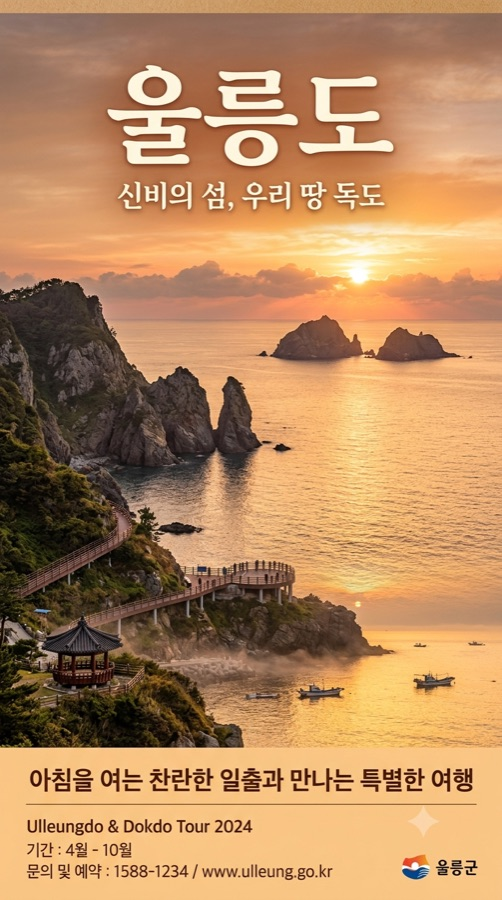
바로 실습 · 내 주제로 만들기
- Gemini나 ChatGPT의 이미지 만들기에 아래 프롬프트를 넣습니다.
- [대괄호]를 내 주제·풍경으로 바꿉니다.
- 마음에 들 때까지 “색을 더 밝게”, “글자 공간 크게”처럼 이어서 고칩니다.
내 [주제]를 알리는 세로형 홍보 포스터를 만들어줘.
[대표 풍경 또는 음식] 느낌, 따뜻한 색감, 위쪽에 "[제목]" 글자가 들어갈 공간.💻 울릉도 홍보 웹페이지
아래 예시가 오늘 여러분이 직접 완성할 결과물입니다. 재료를 만들고, AI에게 코드를 받고, 인터넷에 배포해 QR로 공유합니다.
자세히 · 오늘 어떤 순서로 만드나요?
- 실습에서 소개 글·다국어·질문 항목 재료를 만듭니다.
- AI에게 index.html 전체 코드를 받습니다.
- GitHub에 올려 인터넷 주소로 배포합니다.
- 주소를 QR 코드로 바꿔 포스터·명함에 붙입니다.
오늘 쓰는 도구는 Gemini · ChatGPT · GitHub입니다
AI 도구는 많지만, 처음부터 다 배울 필요는 없습니다. 이번 실습에서는 Gemini로 초안을 만들고, ChatGPT로 비교·수정한 뒤, 완성 HTML을 GitHub Pages로 공개합니다.
실습 방식은 딱 하나입니다
같은 질문을 두 AI에 넣어 보고, 더 쉬운 답을 고른 뒤, 내 정보에 맞게 고쳐 GitHub에 올립니다.
✨Gemini 먼저 만드는 AI
구글 계정으로 시작합니다. 처음 질문을 보내고, 관광 소개문·키워드·번역 초안을 빠르게 만들어 봅니다.
- 처음 질문 보내기
- 소개문과 제목 후보 만들기
- 관광객 질문과 키워드 뽑기
💬ChatGPT 비교하고 고치는 AI
Gemini에서 만든 문장을 붙여넣고 더 쉽게, 더 짧게, 더 친절하게 다듬습니다.
- 같은 질문으로 답변 비교하기
- 문장을 더 쉬운 말로 고치기
- FAQ와 고객 응대 문장 정리하기
| 순서 | 도구 | 할 일 | 결과물 |
|---|---|---|---|
| 1 | Gemini | 처음 답변을 받는다 | 소개문, 제목 후보, 질문 목록 |
| 2 | ChatGPT | 더 쉽게 다듬는다 | 최종 문장, FAQ, 고객 응대문 |
| 3 | 내 메모 | 좋은 문장만 모아둔다 | 웹페이지에 넣을 재료 |
| 4 | GitHub Pages | AI가 만든 index.html을 올린다 | 공유 가능한 홍보 웹페이지 |
브라우저에서 Gemini와 ChatGPT를 준비합니다
이번 실습의 시작은 간단합니다. 브라우저를 열고, Gemini에 로그인하고, ChatGPT도 열어 둡니다. 그다음 같은 질문을 두 AI에 넣어 보며 차이를 비교합니다.
 Gemini 먼저 초안 만들기
Gemini 먼저 초안 만들기
Gemini는 이번 실습에서 첫 답변을 받는 도구입니다.
Gemini 첫 질문 예시
그대로 복사해서 붙여넣습니다. 처음에는 짧게 시작합니다.
울릉도를 처음 방문하는 가족 여행객에게
꼭 알려주면 좋은 점을 5가지로 정리해줘.
초보자도 이해하게 쉬운 말로 써줘.위 답변을 더 짧게 3줄로 줄여줘.
관광 홍보 문구처럼 자연스럽게 고쳐줘. ChatGPT 비교하고 다듬기
ChatGPT 비교하고 다듬기
ChatGPT는 Gemini 답변을 더 쉽게 고치는 도구로 사용합니다.
ChatGPT 첫 질문 예시
Gemini에 넣었던 질문을 그대로 다시 넣습니다. 답이 다르게 나오는지 봅니다.
울릉도를 처음 방문하는 가족 여행객에게
꼭 알려주면 좋은 점을 5가지로 정리해줘.
초보자도 이해하게 쉬운 말로 써줘.이 답변을 관광 홍보 페이지의 첫 문단으로 바꿔줘.
3문장 이내로, 과장 없이 따뜻하게 써줘.| 상황 | 먼저 해볼 것 | 그래도 안 되면 |
|---|---|---|
| Gemini가 안 열림 | 구글 계정으로 다시 로그인 | Chrome이나 Safari 새 탭에서 다시 열기 |
| ChatGPT 로그인이 안 됨 | 처음 쓴 로그인 방법으로 다시 시도 | 구글 로그인 또는 이메일 로그인 중 하나로 통일 |
| 화면이 멈춤 | 새로고침 | 시크릿 창이나 다른 브라우저 사용 |
| 답변이 영어로 나옴 | “한국어로 다시 써줘” 입력 | 프롬프트 끝에 “한국어로” 추가 |
| 답변이 어려움 | “더 쉽게 써줘” 입력 | “초보자도 이해하게” 추가 |
Gemini와 ChatGPT의 답 중 “내가 실제로 손님에게 보여줘도 괜찮은 문장”을 고릅니다. 정답을 찾는 것이 아니라, 고르고 고치는 힘을 연습합니다.
비교 기준 1 · 이해하기 쉬운가?
전문 용어가 많으면 다시 요청합니다. 예: “중학생도 이해하게 쉬운 단어로 바꿔줘.”
비교 기준 2 · 확인할 사실을 표시했나?
운영시간, 가격, 배편, 전화번호가 단정되어 있으면 다시 요청합니다. 예: “확인 필요한 정보는 확인 필요로 표시해줘.”
비교 기준 3 · 내 주제와 맞는가?
울릉도 일반 소개만 나오면 내 정보가 부족한 것입니다. 이름, 위치, 대표 메뉴, 장점을 추가합니다.
비교 기준 4 · 바로 복사할 문장이 있나?
마음에 드는 한 줄만 고르면 충분합니다. 전체 답변을 다 쓰려고 하지 않습니다.
같은 질문도 AI마다 답이 다르게 나옵니다
먼저 Gemini로 초안을 만들고, 같은 요청을 ChatGPT에도 넣어 봅니다. 어느 쪽이 더 쉽고 쓸 만한지 고른 뒤, “더 짧게”, “더 친절하게”, “표로”처럼 이어서 고치는 연습을 합니다.

Gemini 초안 만들기
먼저 넓게 아이디어를 뽑습니다. 답이 길면 바로 줄이라고 요청합니다.
너는 울릉도 관광 홍보 도우미야.
울릉도에 처음 오는 가족 여행객에게 보여줄
관광 소개 문구를 5개 만들어줘.
조건:
- 중학생도 이해하게 쉽게
- 과장 없이
- 각 문장은 40자 이내
- 확인이 필요한 정보는 넣지 말기방금 답변 중 가장 좋은 2개만 골라줘.
왜 좋은지도 초보자가 이해하게 한 줄로 설명해줘.ChatGPT 문장 다듬기
같은 요청을 넣거나, Gemini 답변을 붙여넣고 더 자연스럽게 고칩니다.
너는 관광 홍보 문구를 쉽게 고치는 편집자야.
아래 문장을 더 자연스럽고 친절하게 고쳐줘.
[여기에 Gemini 답변 중 마음에 드는 문장 1개 붙여넣기]
조건:
- 35자 이내
- 관광객에게 말하듯이
- 과장 표현 빼기
- 다른 버전 3개 제안위 문장을 내 가게/숙소/체험 소개에 쓰기 좋게
더 구체적으로 바꾸려면 어떤 정보가 더 필요한지 질문 5개를 해줘.아래 미션은 정답을 맞히는 과제가 아닙니다. “AI에게 부탁하면 바로 무언가가 나온다”는 감각을 익히는 짧은 연습입니다. 하나를 골라 Gemini와 ChatGPT에 각각 넣어 보고, 더 마음에 드는 결과를 표시하세요.
내 주제 이름으로 캐치프레이즈 만들기
가게·숙소·체험 이름만 있어도 시작할 수 있습니다.
[내 주제 이름]을 처음 보는 관광객에게 보여줄
한 줄 홍보 문구를 10개 만들어줘.
짧고 기억하기 쉽게, 과장 없이 써줘.음식이나 체험을 쉬운 영어로 설명하기
직역보다 재료·맛·소요시간·주의사항을 풀어 쓰는 연습입니다.
[따개비밥/오징어내장탕/성인봉 트레킹]을
외국인 관광객이 이해하기 쉬운 영어 3문장으로 설명해줘.
재료, 맛 또는 준비물을 포함해줘.관광객이 물어볼 질문 예상하기
웹페이지 FAQ의 재료가 됩니다.
울릉도에서 [식당/숙소/체험/관광지]를 이용하려는 관광객이
방문 전에 궁금해할 질문 8개를 만들어줘.
교통, 예약, 비용, 날씨, 준비물을 포함해줘.카카오톡 답장처럼 바꾸기
AI 답변을 실제 손님 응대 문장으로 바꿔보는 연습입니다.
아래 내용을 손님에게 보내는 친절한 카카오톡 답장으로 바꿔줘.
3문장 이내로, 너무 딱딱하지 않게 써줘.
[여기에 안내할 내용 붙여넣기]‘프롬프트’는 AI에게 주는 부탁 문장입니다. 좋은 부탁에는 이 세 가지가 들어갑니다.
1. 페르소나 부여
2. 대상 지정
3. 내 정보 제공
4. 출력 형식 지정
5. 예시 제공
6. 금지·주의 조건
7. 자기검토 요청
🙁 아쉬운 부탁
→ 누구를 위해, 무엇을, 어떤 톤인지 없어 두루뭉술한 답이 나옵니다.
🙂 좋은 부탁
[맥락] 처음 오는 가족 여행객에게 보여줄 거야.
[구체적 지시] 성인봉·오징어 요리를 넣어 300자로, 해시태그 10개와 함께 만들어줘.
아래를 복사해 Gemini 또는 ChatGPT에 붙여넣어 보세요. 역할을 주면 답이 얼마나 달라지는지 체험합니다.
너는 울릉도 관광 홍보 전문가야.
울릉도를 처음 방문하는 가족 여행객에게
매력을 전달하는 한 줄 소개 문구를 10개 만들어줘.
감성적이고 짧게, 과장 없이 작성해줘.어떻게 물어봐야 할지 모르겠다면, 먼저 AI에게 내 부탁을 좋은 프롬프트로 고쳐 달라고 요청합니다.
아래 초보 프롬프트를 더 좋은 프롬프트로 고쳐줘.
[초보 프롬프트]
울릉도 식당 소개글 써줘.
[고쳐줄 방식]
1. 역할을 넣어줘
2. 읽는 대상을 넣어줘
3. 내가 추가로 넣으면 좋은 정보를 질문해줘
4. 결과 형식을 정리해줘
5. 과장 방지와 사실 확인 조건을 넣어줘
6. 내가 그대로 복사해서 쓸 수 있는 최종 프롬프트로 만들어줘내가 만든 프롬프트를 평가해줘.
[내 프롬프트]
여기에 내가 쓴 프롬프트를 붙여넣기
[평가 기준]
1. 역할이 분명한가
2. 대상이 분명한가
3. 내 정보가 충분한가
4. 결과 형식이 분명한가
5. 과장·오류·개인정보 위험이 있는가
6. 더 좋은 최종 프롬프트 제안여기 적어두면, 다음 STEP의 “내 정보 넣어서 복사” 버튼이 프롬프트를 자동으로 완성해 줍니다. 모르는 칸은 비워도 됩니다.
AI 답변에서 쓸 문장만 골라 여기에 모읍니다
AI 답변 전체를 다 쓸 필요는 없습니다. 마음에 드는 제목, 소개문, FAQ, 외국어 안내, 확인할 사실만 골라 붙여 두세요. 새로고침해도 이 브라우저에 저장됩니다.
AI에 붙여넣기
각 실습의 복사 버튼을 눌러 AI에 붙여넣고 답변을 받습니다. 답이 길면 “핵심만 3줄로 줄여줘”라고 다시 요청합니다.
작업장에 붙여두기
AI 답변 중 실제로 쓸 문장만 아래 칸에 붙여 둡니다. 마지막 웹페이지 제작 때 이 작업장 내용을 한꺼번에 사용합니다.
웹페이지에 들어갈 글 재료를 만듭니다
여기서 나온 제목·한 줄 소개·SNS 글은 STEP 5에서 웹페이지에 그대로 씁니다.
소개글·SNS·사이트 본문 만들기
너는 울릉도 관광 홍보 전문가야.
아래 정보로 내 주제의 홍보자료를 만들어줘.
[내 정보]
- 이름: [가게/숙소/프로그램 이름]
- 종류: [식당/숙소/체험/관광지/특산품]
- 위치: [위치]
- 대표 메뉴/서비스: [대표 메뉴·객실·체험]
- 장점: [강조하고 싶은 특징]
- 문의: [전화번호 또는 문의 방법]
[만들어줄 것]
1. 큰 제목 5개
2. 한 줄 소개 5개
3. 인스타그램 글 1개 (해시태그 10개 포함)
4. 웹페이지 소개 섹션에 넣을 짧은 본문 1개
조건: 중학생도 이해하게 쉽게 / 과장 없이 /
가격·시간·배편은 "확인 필요"로 표시#울릉도맛집 #도동항 #따개비밥 #오징어내장탕 #울릉도여행
2-2블로그 글 제목 뽑기
울릉도 [내 주제]로 관광객이 검색할 만한
블로그 글 제목 10개를 만들어줘.
검색에 잘 걸릴 키워드를 넣고, 클릭하고 싶게 작성해줘.2-3릴스·쇼츠 15초 대본
[내 주제]를 소개하는 15초 릴스 대본을 만들어줘.
장면별로 나누고, 화면 자막과 배경 설명을 함께 적어줘.2-4계절별 홍보 문구
[내 주제]의 봄·여름·가을·겨울 계절별 홍보 문구를
각 2개씩 만들어줘. 짧고 감성적으로, 과장 없이.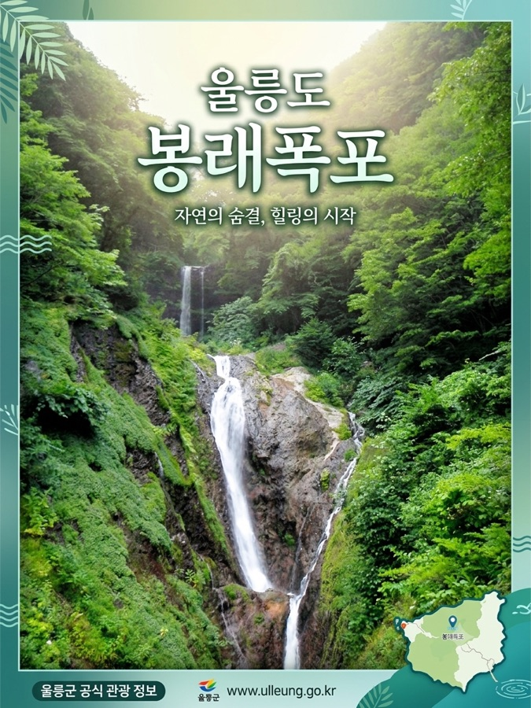
외국인도 이해하는 다국어 안내 만들기
울릉도는 외국인 관광객도 늘고 있습니다. 영어·일본어 안내와, 문화가 달라도 헷갈리지 않는 쉬운 표현을 만들어 둡니다.
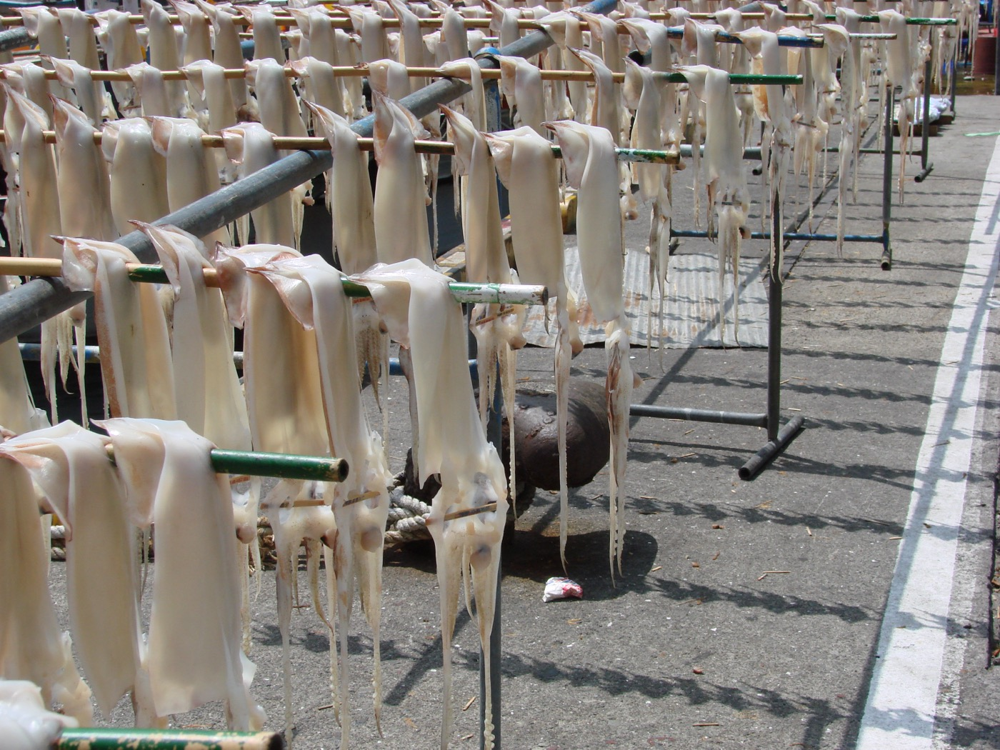
영어·일본어 안내문 + 음식 설명
우리 가게를 처음 방문하는 외국인 관광객을 위한
영어와 일본어 안내문을 만들어줘.
[내 정보]
- 이름 / 종류 / 위치 / 대표 메뉴 / 문의
[만들어줄 것]
1. 영어 안내 3줄 (짧고 쉬운 문장)
2. 일본어 안내 3줄
3. 대표 메뉴를 외국인이 이해하게 재료·맛과 함께 설명
4. 외국인이 자주 묻는 질문 3개와 답 (영어)
조건: 쉬운 표현 / 예약·결제·알레르기 분명하게 / 정중하게Signature dishes: barnacle rice & squid soup with fresh local catch.
Ocean-view seats available — reservation recommended (card payment OK).
3-2외국인 FAQ (영어)
외국인 관광객이 자주 묻는 질문 5개와 답을 영어로 만들어줘.
배편·결제·예약·주차·와이파이를 포함하고, 쉬운 문장으로.3-3다국어 메뉴판
내 메뉴 [메뉴 목록]을 한국어·영어·일본어 메뉴판으로 만들어줘.
각 메뉴에 한 줄 설명과 알레르기 안내를 넣어줘.3-4생태관광 주의 안내 (한·영)
생태관광 방문객을 위한 자연 보호·안전·계절 주의 안내를
한국어와 영어로 각 4줄씩 만들어줘. 정중하고 쉬운 표현으로.웹페이지에 넣을 질문과 확인 항목을 먼저 만듭니다
홍보 페이지는 예쁜 문장보다 관광객이 궁금해하는 것에 답하는 구조가 중요합니다. FAQ, 검색 키워드, 사실 확인 목록을 먼저 만들어 페이지의 뼈대를 세웁니다.

후속 질문으로 파고들기
표로 정리해 달라고 하기
국내 / 외국인 나눠서 요청
다른 지역과 비교시키기
‘확인 필요’를 꼭 표시시키기
관광객 관점 + 사실 확인 목록
울릉도 [내 주제] 홍보 웹페이지를 만들려고 해.
아래를 표로 정리해줘.
1. 관광객이 방문 전에 가장 궁금해하는 것 7가지
2. 사람들이 많이 쓰는 검색 키워드 10개 (국내/외국인 나눠서)
3. 다른 인기 관광지 소개 페이지에서 배울 점 3가지
4. 내가 반드시 사실 확인해야 할 항목
(가격·운영시간·배편·전화·주소 등)
확실하지 않은 정보는 "확인 필요"로 표시하고,
과장 없이 사실 위주로 정리해줘.| 항목 | AI가 정리한 내용 | 비고 |
|---|---|---|
| 궁금해하는 것 | 배편 시간·결항 여부, 주차, 아이 동반, 예약 방법, 영어 안내 여부 | — |
| 검색 키워드 (국내) | 울릉도 맛집 · 도동항 회 · 성인봉 등산 · 울릉도 2박3일 | — |
| 검색 키워드 (외국인) | Ulleungdo food · Ulleungdo ferry · things to do in Ulleungdo | — |
| 다른 지역에서 배울 점 | 제주: 코스별 카드 / 강릉: 사진 중심 / 거제: 예약 버튼 상단 고정 | — |
| 사실 확인 항목 | 가격 · 운영시간 · 배편 시각 · 전화번호 · 주소 | 확인 필요 |

5-2경쟁 지역 벤치마킹
제주·강릉·거제의 [내 주제] 홍보 방식을 비교하고,
울릉도가 배울 점 5가지를 표로 정리해줘.5-3관광객 질문 모으기
[내 주제] 방문객이 방문 전에 가장 많이 묻는 질문 15개를
카테고리(교통·예약·비용·준비물·날씨)별로 묶어줘.5-4콘텐츠 아이디어 뽑기
위 조사 결과를 바탕으로, 이번 시즌에 올리면 좋을
SNS 콘텐츠 아이디어 10개를 이유와 함께 제안해줘.내 업무에 맞는 걸 골라서 AI로 만들어봅니다
앞의 실습(소개 글·다국어·질문 조사)이 웹페이지 재료였다면, 여기서는 같은 방법을 현장 업무로 넓힙니다. 전부 할 필요는 없어요. 아래에서 내 일에 맞는 것 1~2개를 골라 바로 만들어보세요.
📱SNS 홍보 글
인스타·블로그·페이스북 게시글
내 [주제]를 홍보하는 인스타그램 게시글 1개를 써줘.
방문하고 싶게 감성적으로 쓰고, 마지막에 어울리는 해시태그 10개를 붙여줘. 과장은 빼고.🗺️관광 코스·상품 소개
추천 코스 글 + 한 줄 카피
울릉도 [주제]를 즐기는 반나절·1박2일 추천 코스를
이동 동선·소요시간과 함께 정리하고, 홍보용 한 줄 카피 3개도 만들어줘.🌐다국어 안내
영어·일본어 안내 문구
우리 [주제]를 처음 방문하는 외국인을 위한
영어와 일본어 안내문을 각 3줄로 쉽게 써줘. 예약·결제·주의사항은 분명하게.🎙️투어 멘트
맞이 인사 + 코스 설명 스크립트
외국인 단체 관광객을 맞이하는 인사말과,
[주제] 코스를 소개하는 2분 분량 가이드 멘트를 쉬운 한국어로 써줘. 안전·자연보호 안내도 넣어줘.💬문의·민원 답변
정중한 답변 초안
관광객이 "[문의·민원 내용]"이라고 물어봤어.
정중하고 신뢰가 가는 답변을 공식·친근 두 가지 톤으로 써줘.📣보도자료·홍보 이메일
행사 알림, 제휴처 발송
울릉도 [행사·축제 이름]을 알리는 짧은 보도자료 초안과,
여행사·언론에 보낼 홍보 이메일을 각각 써줘. 일정·장소·연락처는 [빈칸]으로 둬.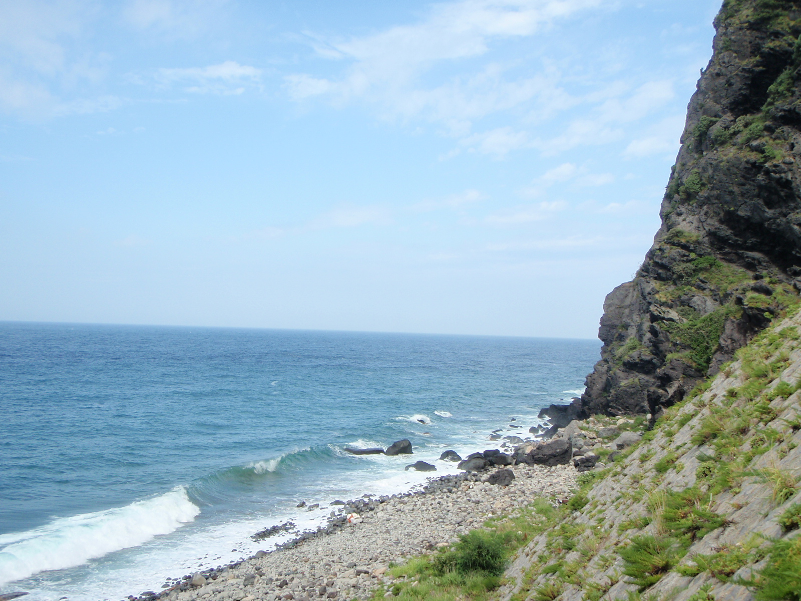
O 또는 X를 눌러 보세요. 정답과 이유가 바로 나옵니다.
AI에게 index.html 전체 코드를 받습니다
최종 배포는 GitHub Pages로 합니다. 오늘은 사이트 빌더에서 조립하지 않고, Gemini나 ChatGPT가 만든 완성 HTML 코드를 GitHub에 올립니다.
🧩 잠깐, HTML이 뭔가요?
HTML은 웹페이지를 이루는 글입니다. 웹페이지의 각 부분에 “이건 제목”, “이건 사진”, “이건 전화 버튼”처럼 이름표를 붙여 둔 것이라고 보면 됩니다. 브라우저(크롬·사파리)가 그 이름표를 읽어서 우리가 보는 화면으로 그려 줍니다.
그리고 index.html은 그 웹페이지의 첫 화면(대문) 파일 이름입니다. 주소로 접속하면 브라우저가 가장 먼저 이 파일을 엽니다.
오늘은 이 HTML을 직접 쓰지 않습니다. AI가 대신 써 주고, 우리는 내용을 정하고 → 확인하고 → 올리는 일을 합니다. 뜻을 다 몰라도 만드는 데는 문제없습니다.
정보를 미리 정리하지 않아도 됩니다. 아래 프롬프트를 넣으면 AI(ChatGPT)가 먼저 몇 가지를 물어보고, 답하면 그 내용으로 웹페이지를 만들어 파일로 내려받게 해 줍니다.
너는 초보자도 이해하기 쉬운 관광 홍보 웹페이지를 만드는 웹디자이너야.
바로 코드를 만들지 말고, 먼저 나에게 아래 항목을 한 번에 하나씩 질문해줘.
내가 답하면 다음 질문을 하고, 모든 답을 받은 뒤에 웹페이지를 만들어줘.
[하나씩 물어볼 것]
1. 이름과 종류 (예: 해울림식당 / 식당)
2. 위치 (동네·근처 랜드마크)
3. 대표 메뉴·서비스 또는 체험
4. 우리만의 장점 한 가지
5. 문의 방법 (전화·인스타 등)
6. 강조하고 싶은 분위기 (예: 가족·감성·활기)
[답을 다 받은 뒤에 만들 것]
- GitHub Pages에 올릴 index.html 전체 코드 (HTML·CSS·JS 한 파일)
- 첫 화면(이름·제목·한 줄 소개·전화/지도 버튼), 소개 카드 3개,
방문 안내, 쉬운 영어 3줄, FAQ 5개, 문의 섹션
- 모바일에서 안 겹치게, 사진은 "내 사진으로 교체" 자리로,
가격·시간·배편은 "확인 필요"로 표시
- 다 만들면 이 코드를 index.html 파일로 저장해서
다운로드할 수 있는 링크로 줘. (파일이 안 되면 코드만 보여줘)
지금은 설명하지 말고, 첫 번째 질문부터 시작해줘.완성 index.html 요청하기
너는 초보자도 이해하기 쉬운 관광 홍보 웹페이지를 만드는 웹디자이너야.
아래 정보를 바탕으로 GitHub Pages에 올릴 index.html 전체 코드를 만들어줘.
[내 정보]
- 이름/종류/위치/대표 메뉴·서비스/장점/문의/한 줄 소개
- 작업장에서 만든 제목, 소개문, FAQ, 외국어 안내, 확인 필요 항목
[페이지 구성]
1. 첫 화면: 이름, 큰 제목, 한 줄 소개, 대표 사진 자리, 전화/지도 버튼
2. 소개 카드 3개: 위치 / 대표 메뉴·체험 / 추천 대상
3. 방문 안내: 운영시간, 예약, 결제, 주차 또는 준비물
4. 외국어 안내: 쉬운 영어 3줄
5. FAQ: 관광객 질문 5개와 짧은 답변
6. 마지막 문의 섹션: 전화, 지도, 예약 버튼
[코드 조건]
- index.html 하나에 HTML, CSS, JavaScript를 모두 넣기
- 외부 라이브러리, 웹폰트, 외부 이미지는 사용하지 않기
- 모바일에서도 글자와 버튼이 겹치지 않게 만들기
- 사진은 임시 박스로 두고 "내 사진으로 교체"라고 표시하기
- 미확인 가격·운영시간·배편은 "확인 필요"로 표시하기
- 코드만 출력하고 설명은 붙이지 않기AI 코드가 마음에 안 들 때
방금 만든 HTML을 초보자 수업용으로 다시 고쳐줘.
조건:
- 화면 첫 부분에 이름과 문의 버튼이 크게 보이게
- 휴대폰에서 버튼이 한 줄에 억지로 들어가지 않게
- 글자 크기는 크게, 문단은 짧게
- 확인 필요 정보는 눈에 띄게 표시
- 전체 코드를 index.html 하나로 다시 출력
- 설명 없이 코드만 출력이 HTML 코드를 공개 전에 점검해줘.
아래 항목을 표로 확인해줘.
1. 모바일 화면에서 깨질 가능성
2. 문의 버튼 누락 여부
3. 지도/전화 링크가 임시값인지
4. 과장 표현
5. 가격·운영시간·배편처럼 사실 확인이 필요한 정보
6. 사진 권리 또는 개인정보 위험낯설어 보여도 괜찮습니다. 직접 코딩하는 게 아니라, AI가 아래처럼 코드를 쭉 만들어 줍니다. 우리는 <!DOCTYPE html>부터 맨 끝 </html>까지 통째로 복사해서 GitHub에 붙여넣기만 하면 됩니다.
<!DOCTYPE html>
<html lang="ko">
<head>
<meta charset="UTF-8">
<meta name="viewport" content="width=device-width, initial-scale=1">
<title>해울림식당 · 울릉도 도동항</title>
<style> /* AI가 색·글자 크기·모바일 정리를 자동으로 넣어 줍니다 */ </style>
</head>
<body>
<h1>해울림식당</h1>
<p>도동항 3분, 바다를 보며 즐기는 울릉도 한 끼</p>
<a href="tel:확인 필요">📞 전화하기</a>
<!-- 소개 카드 · 방문 안내 · FAQ · 문의 섹션이 이어서 나옵니다 -->
</body>
</html>설명이 너무 많을 때
설명은 빼고 index.html에 붙여넣을 코드만 다시 출력해줘.코드가 중간에 끊겼을 때
방금 코드가 중간에 끊겼어.
처음부터 끝까지 완성된 index.html 전체 코드를 다시 출력해줘.모바일이 걱정될 때
휴대폰 화면에서 글자, 사진, 버튼이 겹치지 않게 CSS를 다시 고쳐줘.
버튼은 세로로 쌓여도 좋고, 전체 너비는 화면 밖으로 넘치지 않게 해줘.내 정보로 바꾸고 싶을 때
아래 HTML 코드에서 예시 정보를 내 정보로 바꿔줘.
구조와 디자인은 유지하고, 문구만 자연스럽게 수정해줘.
[내 정보 붙여넣기]
[HTML 코드 붙여넣기]완성하면 이런 모습이 됩니다
아래 예시처럼 첫 화면, 소개, 방문 안내, FAQ, 문의가 한 흐름으로 보이면 충분합니다. GitHub Pages에서도 같은 HTML이 데스크톱과 휴대폰에 맞게 열립니다.
이 항목이 다 있으면 완성입니다
하나씩 눌러 확인하세요. 체크 상태는 이 브라우저에 저장됩니다.
구성 점검
사실 점검
외국어 점검
권리 점검
바로 공개 가능
사실 확인이 끝났고, 모바일 화면이 정상이며, 문의/지도 버튼이 작동하고, index.html 파일명도 맞습니다.
조금 보완
문구나 사진은 좋지만 운영시간, 가격, 지도, 외국어 표현 중 일부 확인이 남았습니다.
아직 연습
정보가 부족하거나 문의 버튼, 지도, 모바일 확인이 빠져 있습니다. 작업장으로 돌아가 빈칸을 채우세요.
완성한 웹페이지를 인터넷에 공개된 주소로 만듭니다
AI가 만든 index.html 코드를 GitHub 저장소에 올리고 GitHub Pages를 켜면, 누구나 접속할 수 있는 내 웹페이지 주소가 생깁니다.
GitHub 로그인
github.com에 접속해 로그인합니다. 계정이 없으면 Sign up으로 계정을 만듭니다.
새 저장소 만들기
오른쪽 위 + 버튼 또는 New repository를 누릅니다. 이름은 예: haeullim-ulleung처럼 영어와 숫자로 짧게 씁니다.
Public 선택
GitHub Pages로 공개하려면 처음에는 Public을 선택합니다. 개인정보나 내부 자료는 넣지 않습니다.
index.html 만들기
저장소 화면에서 Add file → Create new file을 누르고 파일 이름을 반드시 index.html로 적습니다.
AI 코드 붙여넣기
STEP 5에서 받은 코드 전체를 붙여넣습니다. <!DOCTYPE html>부터 </html>까지 빠지지 않아야 합니다.
Commit changes
오른쪽 위 또는 아래의 Commit changes를 누릅니다. 이 버튼은 “저장” 버튼이라고 생각하면 됩니다.
Pages 켜기
Settings → Pages로 이동합니다. Source에서 Deploy from a branch, Branch는 main, Folder는 /root를 선택하고 저장합니다.
URL 열어보기
잠시 뒤 Your site is live at ... 주소가 보입니다. 주소는 보통 https://아이디.github.io/저장소이름/ 형태입니다.
수정이 필요할 때
index.html 파일을 열고 연필 아이콘을 눌러 다시 수정한 뒤 Commit changes를 누르면 같은 주소에 반영됩니다.
배포는 끝이 아니라 시작입니다. 내 페이지를 열어 보고, 고치고 싶은 곳을 Gemini·ChatGPT에게 부탁해 새 코드를 받고, GitHub에 다시 올려 새로고침 — 이 과정을 마음에 들 때까지 반복하면 됩니다. 한 번에 완벽하지 않아도 괜찮아요.
🎨 디자인 고치기
방금 만든 웹페이지에서 아래를 고쳐줘. 전체 index.html 코드로 다시 줘.
- 전화·예약 버튼을 더 크고 눈에 띄게
- 글자 크기를 조금 키우고 줄 간격은 넉넉하게
- 전체 색은 [원하는 느낌: 예) 바다처럼 시원하게]로
- 설명 없이 코드만 출력✍️ 글·구성 고치기
방금 웹페이지의 내용을 이렇게 바꿔줘. 전체 index.html 코드로 다시 줘.
- "[지금 문구]"를 "[바꿀 문구]"로 수정
- [추가할 섹션: 예) 오시는 길, 손님 후기] 섹션 추가
- 필요 없는 [섹션]은 삭제
- 설명 없이 코드만 출력AI가 만든 페이지에는 “내 사진으로 교체”라고 적힌 빈 사진 자리가 있습니다. 여기에 실제 사진을 넣는 순서입니다.
내 웹페이지의 "내 사진으로 교체" 자리에 아래 사진을 넣어줘.
- 첫 화면 큰 사진: photo1.jpg
- 소개 카드 사진: photo2.jpg
(사진 파일은 index.html과 같은 폴더에 올려 뒀어)
전체 index.html 코드로 다시 줘. 설명 없이 코드만 출력.공개된 웹페이지 주소를 QR 코드로 바꿉니다
배포한 GitHub Pages 주소를 네이버 QR 코드로 만들면, 포스터·메뉴판·명함·안내문에 붙여 누구나 휴대폰으로 바로 열 수 있습니다.
GitHub Pages URL 복사
공개된 주소를 복사합니다. 주소는 반드시 https://로 시작해야 합니다.
휴대폰에서 열어보기
복사한 URL을 카카오톡 나에게 보내기, 문자, 메모장 등에 붙여 휴대폰에서 엽니다. 휴대폰에서 열리면 1차 성공입니다.
네이버 QR 코드 생성기 열기
PC에서 qr.naver.com에 접속하고 네이버 계정으로 로그인합니다. 상단 또는 첫 화면의 코드 생성을 누릅니다.
디자인 고르기
기본형 또는 스킨형 중 하나를 고릅니다. 처음이면 기본형을 추천합니다. 제목은 예: 해울림식당 홍보 페이지처럼 나중에 알아보기 쉽게 적습니다.
URL 링크 유형 선택
페이지 유형에서 URL 링크를 선택하고, GitHub Pages에서 만든 내 웹페이지 주소를 붙여넣습니다.
저장하고 다운로드
저장 버튼을 눌러 QR을 만든 뒤 이미지 파일로 저장합니다. 포스터, 메뉴판, 명함, 안내문에 넣을 수 있습니다.
휴대폰으로 스캔 테스트
카메라 앱으로 QR을 찍어 내 홍보 웹페이지가 바로 열리는지 확인합니다. 안 열리면 저장소가 Public인지, 파일명이 index.html인지, Pages 설정이 켜졌는지 확인합니다.
복사해서 [대괄호]만 바꾸면 됩니다
막막할 땐 여기서 꺼내 쓰세요. 위 입력칸을 채우고 “채워서 복사”를 누르면, 대괄호가 내 정보로 바뀐 완성 프롬프트가 복사됩니다. (비운 칸은 대괄호 그대로 남습니다.)
너는 [역할]이야.
[대상]에게 보여줄 [만들 것]을 만들어줘.
[꼭 넣을 내용]
- [키워드1, 키워드2, 키워드3]
[조건]
- 분위기/톤: [따뜻하게 / 활기차게 등]
- 길이/형식: [300자 이내 / 표로 / 목록으로]
- 언어: [한국어 / 영어 / 일본어]
- 확인이 필요한 가격·시간·배편은 "확인 필요"로 표시너는 울릉도 맛집 홍보 전문가야.
[식당 이름]의 인스타그램 홍보글을 만들어줘.
대표 메뉴는 [메뉴]이고, 위치는 [위치]야.
따뜻하고 먹음직스럽게, 300자 이내, 해시태그 10개 포함.너는 울릉도 여행 안내 전문가야.
[숙소 이름]을 가족 여행객에게 소개하는 글을 만들어줘.
특징은 [바다 전망 / 주방 완비 등], 주변에 [관광지]가 있어.
따뜻하고 친근하게, 예약 안내 문구도 함께.너는 생태관광 체험 기획자야.
[체험 이름] 소개문을 만들어줘.
소요 시간·난이도·준비물·추천 계절·예약 안내를 포함하고,
안전 안내도 넣어줘. 가격은 "확인 필요"로 표시.외국인 관광객을 위한 [가게 이름] 안내문을 만들어줘.
영어와 일본어 각 3줄, 쉬운 표현으로.
대표 메뉴 [메뉴]는 재료·맛·특징을 함께 설명하고,
예약·결제·알레르기 정보를 분명하게.예약 문의 고객에게 보내는 친절한 카카오톡 답변을 만들어줘.
위치는 [위치], 예약 방법은 [방법]이야.
정중하고 따뜻하게, 3~4문장으로.답이 너무 길 때
핵심만 3줄로 줄여줘.
초보자도 바로 이해할 수 있게 쉬운 표현으로 다시 써줘.말이 과장됐을 때
실제로 확인한 정보만 남기고 과장 표현을 줄여줘.
가격·시간·배편처럼 확인이 필요한 내용은 "확인 필요"로 표시해줘.번역이 어색할 때
외국인 관광객이 이해하기 쉬운 자연스러운 표현으로 고쳐줘.
음식 이름은 그대로 번역하지 말고 재료와 맛을 함께 설명해줘.웹페이지가 깨졌을 때
휴대폰 화면에서 글자와 버튼이 겹치지 않게 CSS를 고쳐줘.
버튼은 누르기 쉽게 크고, 사진은 화면 밖으로 넘치지 않게 해줘.여러 작업을 순서대로 이어서 시키기
지금까지는 하나씩 물었습니다. 이번엔 큰 목표를 주고 할 일을 번호로 나눠 한 번에 이어서 시켜봅니다.
물어보면 만들어 줍니다
내가 하나 물으면, 하나를 만들어 줍니다.
여러 단계를 이어서 처리합니다
목표만 주면 여러 일을 순서대로 스스로 해냅니다.
아래 다섯 단계를 한 대화에서 이어서 시켜보세요.
조사
울릉도 관광객이 검색할 만한 키워드 20개를 추천해줘.
국내 관광객과 외국인 관광객을 나누어 정리해줘.정리
위 키워드를 바탕으로 울릉도 관광 홍보에서
강조해야 할 포인트 5가지를 정리해줘.콘텐츠 만들기
위 포인트를 바탕으로 인스타그램 게시글 3개와
블로그 제목 5개를 만들어줘.번역
위 게시글 중 1개를 영어와 일본어로 자연스럽게 번역해줘.웹페이지 구성
지금까지 만든 내용을 바탕으로 울릉도 생태관광 홍보
웹페이지 구조를 만들어줘. 첫 화면, 프로그램 소개,
추천 코스, FAQ, 예약 문의 섹션을 포함해줘.AI 흐름을 조금 더 깊게 이해합니다
메인 실습을 끝낸 뒤 읽는 심화 자료입니다. 2026년 AI 활용 흐름과 관광 홍보 연결점을 한 번에 정리합니다.
AI는 아주 많은 글과 정보를 미리 학습해 두었다가, 우리가 부탁하면 글·번역·이미지·요약을 만들어 주는 프로그램입니다.
쉽게 비유하면
책을 아주 많이 읽은 신입 직원과 같습니다. 빠르게 초안을 만들지만, 현장 사정·가격·운영시간·배편처럼 바뀌는 정보는 모를 수 있습니다.
생성형 AI란
글·이미지·번역·음성·웹페이지처럼 새 결과물을 만들어 주는 AI입니다. 이 자료에서는 홍보 문구, 외국어 안내, FAQ, 웹페이지 초안을 만드는 데 씁니다.
1. 내가 쓴 말을 읽습니다
2. 배운 패턴을 바탕으로 초안을 만듭니다
3. 내가 준 정보가 많을수록 구체적입니다
4. 마지막 확인은 사람이 합니다
| 구분 | AI가 잘하는 일 | 사람이 확인할 일 |
|---|---|---|
| 글쓰기 | 소개문, SNS 글, 제목 후보, FAQ 초안 | 과장 표현, 실제와 다른 표현, 지역 정서 |
| 번역 | 영어·일본어·중국어 초안, 쉬운 표현 변환 | 음식 설명, 알레르기, 예약·결제 표현 |
| 조사 | 관광객 질문 예상, 키워드, 비교표 | 최신 가격, 배편, 운영시간, 공식 공지 |
| 디자인 | 페이지 구조, 버튼 문구, 색상 제안 | 모바일 화면, 사진 품질, 문의 버튼 작동 |
| 코딩 | HTML 초안, CSS 수정, 반응형 개선 | 브라우저에서 실제로 열리는지, 링크가 맞는지 |
AI는 더 이상 “챗봇에 한 번 물어보는 도구”에 머물지 않습니다. 2026년에는 글·이미지·음성·영상·코딩·검색·업무 자동화가 한 화면에서 연결되고 있습니다. 아래 흐름을 이해하면, 관광 홍보 콘텐츠 제작도 훨씬 선명해집니다.
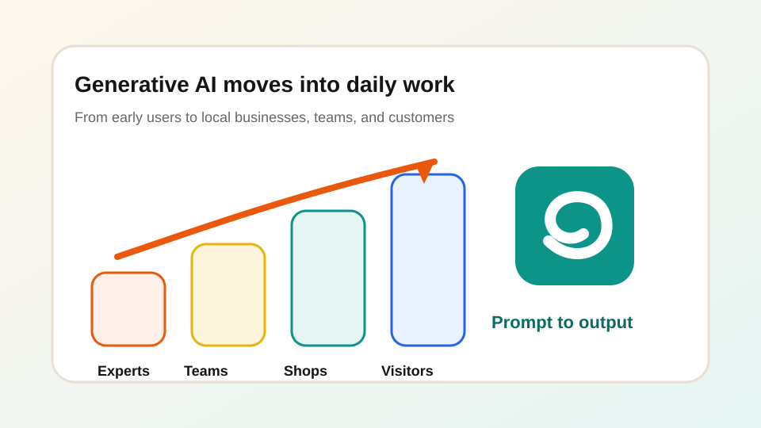
생성형 AI가 빠르게 대중화됨
Stanford HAI 2026 AI Index는 생성형 AI가 대중 시장에 나온 뒤 3년 만에 약 53% 수준의 인구 단위 채택에 도달했다고 정리합니다. 이제 AI는 일부 전문가만 쓰는 도구가 아니라, 손님·경쟁 업체·플랫폼 모두가 쓰는 일상 도구가 되고 있습니다.
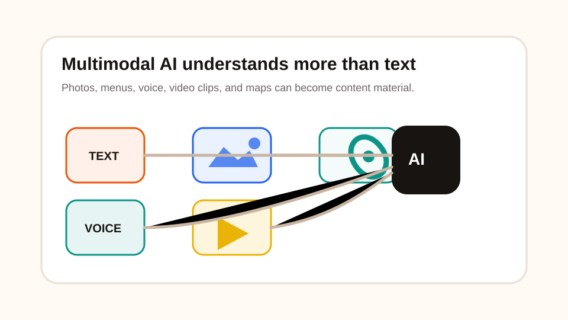
텍스트만이 아니라 사진·음성·영상까지 다룸
최신 AI는 글만 읽는 것이 아니라 사진, 메뉴판 이미지, 지도, 음성, 영상까지 함께 이해하고 만들 수 있습니다. 이것을 멀티모달 AI라고 부릅니다.
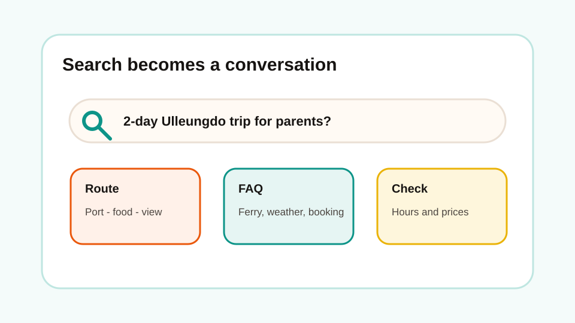
검색이 “링크 목록”에서 “답변형 검색”으로 바뀜
관광객은 이제 “울릉도 맛집”만 검색하지 않습니다. “부모님과 가기 좋은 울릉도 2박3일 코스”, “비 오는 날 갈 만한 곳”처럼 질문형으로 묻고, AI가 바로 정리한 답을 기대합니다.
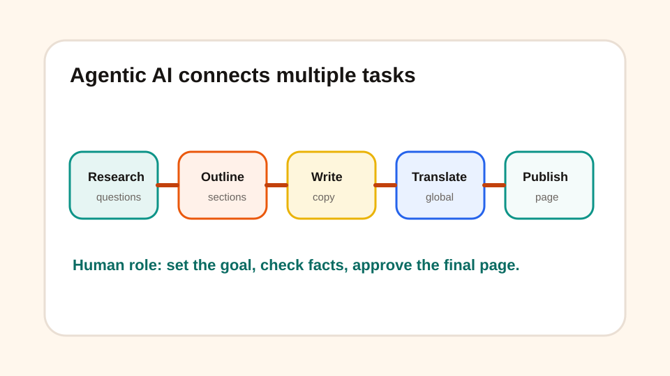
에이전트 AI: 여러 단계를 이어서 처리
McKinsey의 2025 State of AI는 AI 사용이 넓어지고, 특히 agentic AI가 확산되고 있지만 많은 조직은 아직 실험에서 실제 업무 적용으로 넘어가는 중이라고 설명합니다. 에이전트 AI는 조사, 정리, 작성, 수정 같은 여러 단계를 이어서 처리합니다.
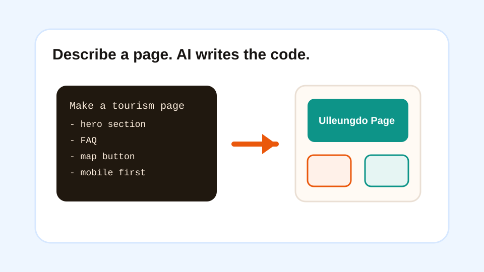
코딩을 몰라도 웹페이지와 도구를 만들 수 있음
AI 코딩 도구는 HTML, CSS, JavaScript 같은 코드를 사람이 직접 쓰지 않아도 만들어 줍니다. 중요한 능력은 코딩 문법보다 원하는 결과를 정확히 설명하고, 결과를 확인하고, 다시 고치는 힘입니다.
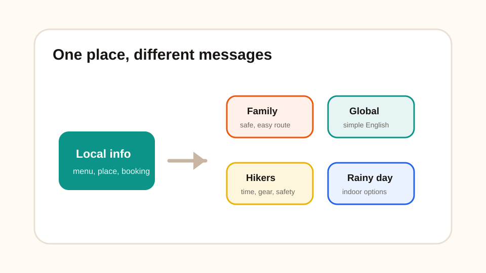
개인화 콘텐츠가 쉬워짐
같은 장소라도 가족 여행객, 외국인, 등산객, 당일치기 여행객, 어르신 동반 여행객에게 필요한 정보가 다릅니다. AI는 같은 정보를 대상별 문장으로 바꾸는 데 강합니다.
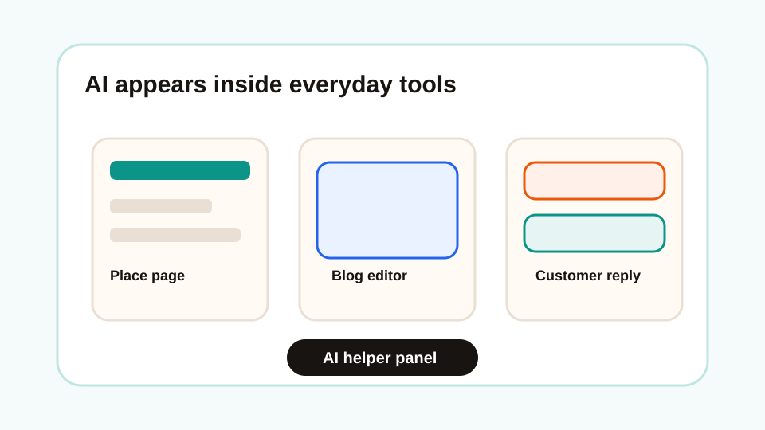
업무 도구 안에 AI가 기본으로 들어감
문서 작성, 검색, 디자인, 예약 응대, 고객 관리, 코딩 도구 안에 AI 기능이 들어가고 있습니다. 따로 AI 앱을 열지 않아도 일하던 화면에서 바로 도움을 받는 방향입니다.
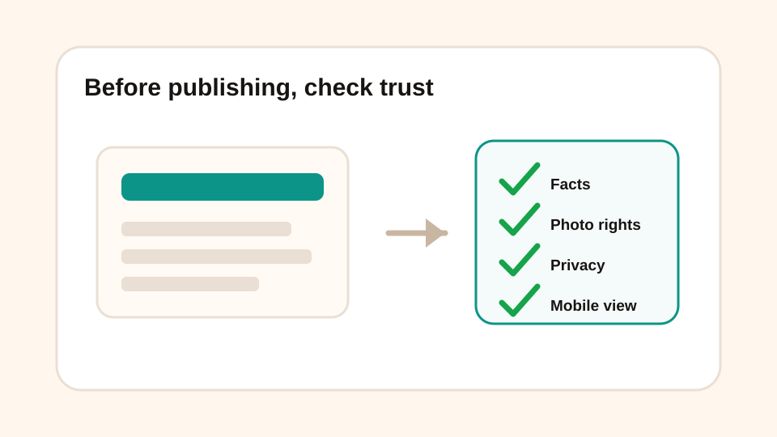
책임 있는 사용이 더 중요해짐
AI가 빠르게 퍼질수록 틀린 정보, 저작권, 개인정보, 과장 광고, 편향 표현도 함께 문제가 됩니다. Stanford HAI도 AI 능력은 빠르게 발전하지만 이를 측정하고 관리하는 체계는 따라가기 어렵다고 지적합니다.
| AI 동향 | 관광 홍보에서 생기는 변화 | 이 자료에서 해볼 실습 |
|---|---|---|
| 생성형 AI 대중화 | 작은 가게도 직접 홍보 콘텐츠를 만들 수 있음 | 소개문, SNS 글, 제목 후보 만들기 |
| 멀티모달 AI | 사진·메뉴판·지도·음성을 콘텐츠 재료로 활용 | 사진 설명, 음식 설명, 음성 소개 예시 보기 |
| 답변형 검색 | 관광객 질문에 답하는 페이지가 중요해짐 | FAQ, 방문 전 질문, 리서치 표 만들기 |
| 에이전트 AI | 조사→정리→작성→번역→제작 흐름을 이어서 처리 | 선택 실습에서 여러 작업을 순서대로 시키기 |
| AI 코딩 | 비전공자도 간단한 웹페이지를 만들 수 있음 | GitHub Pages에 올릴 index.html 만들기 |
| 개인화 | 고객 유형별 안내문을 쉽게 만들 수 있음 | 가족/외국인/등산객용 문구 변형하기 |
| AI 거버넌스 | 공개 전 사실·권리·개인정보 확인이 필수 | 구성/사실/외국어/권리 점검표 작성 |
아래 사례는 실제 업무 흐름에 바로 붙일 수 있는 사용 방식입니다. 중요한 것은 “AI에게 한 번 물어보기”가 아니라, 작은 일을 순서대로 맡기는 것입니다.
손님 질문을 미리 예상
“주차되나요?”, “배편 시간에 맞춰 식사할 수 있나요?”, “외국인도 주문하기 쉬운가요?” 같은 질문을 AI에게 뽑게 한 뒤 FAQ로 정리합니다.
내 말을 홍보 문구로 바꾸기
“도동항에서 가깝고 가족이 운영해요” 같은 평범한 설명을 제목, 한 줄 소개, SNS 문장으로 바꿉니다.
외국인이 이해하는 설명 만들기
“따개비밥”, “오징어내장탕”처럼 번역만으로 부족한 말은 재료·맛·먹는 방법·알레르기까지 풀어 설명합니다.
긴 자료를 요약하고 다시 쓰기
관광 안내문, 체험 설명, 안전 수칙을 넣고 초보자용, 외국인용, 어린이 동반 가족용으로 다시 쓰게 할 수 있습니다.
웹페이지 구조 잡기
첫 화면, 소개 카드, 방문 안내, FAQ, 문의 버튼처럼 방문자가 읽는 순서로 페이지 구성을 제안받습니다.
이제 직접 만들고 다시 고칠 수 있습니다
울릉도 생태관광 홍보 웹페이지를 처음부터 끝까지 스스로 완성하는 흐름을 익혔습니다. AI는 거들었을 뿐, 콘텐츠의 주인은 여러분입니다. 같은 순서를 내 가게·숙소·체험·관광지에 반복해서 적용할 수 있습니다.